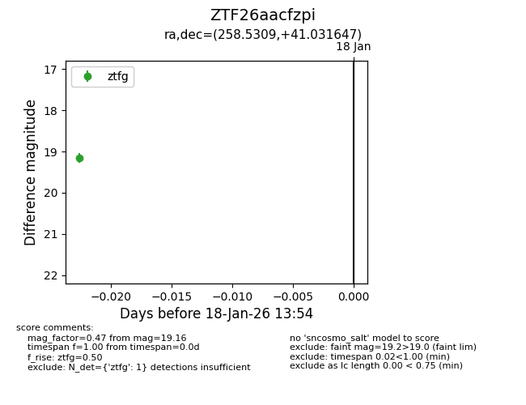
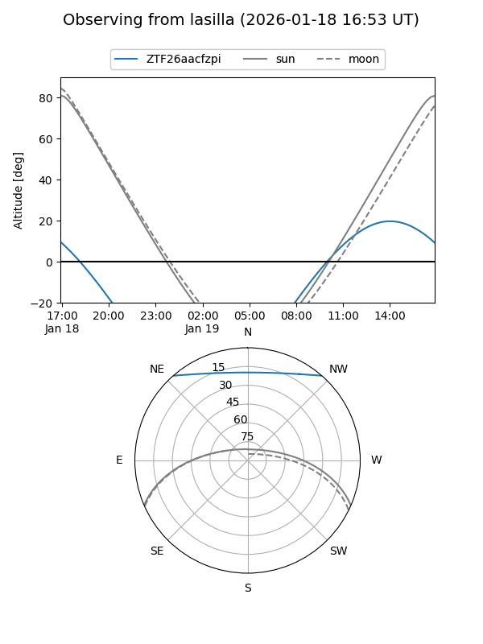
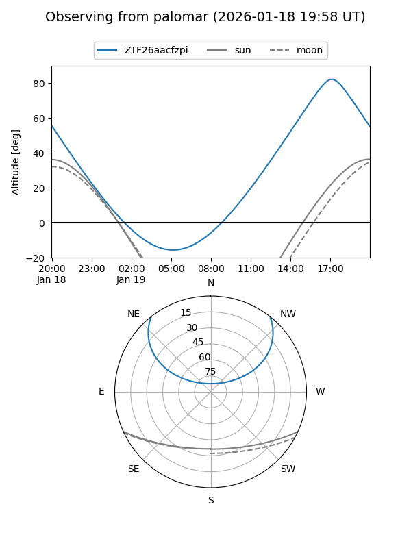

ZTF26aacfzpi
Target ZTF26aacfzpi at 2026-01-18 13:55
Aliases and brokers:
FINK: link
Lasair: link
ALeRCE: link
alt names
ZTF26aacfzpi (ztf,fink_ztf)
Coordinates:
equatorial (ra, dec) = 258.5309,+41.03165
equatorial (HMS+DMS) = 17:14:07.41,+41:01:53.93
galactic (l, b) = (65.7070,+35.16423)
Flags:
Photometry:
last ztfg=19.16
1 ztfg detections
Lightcurve

Visibility


Additional plots